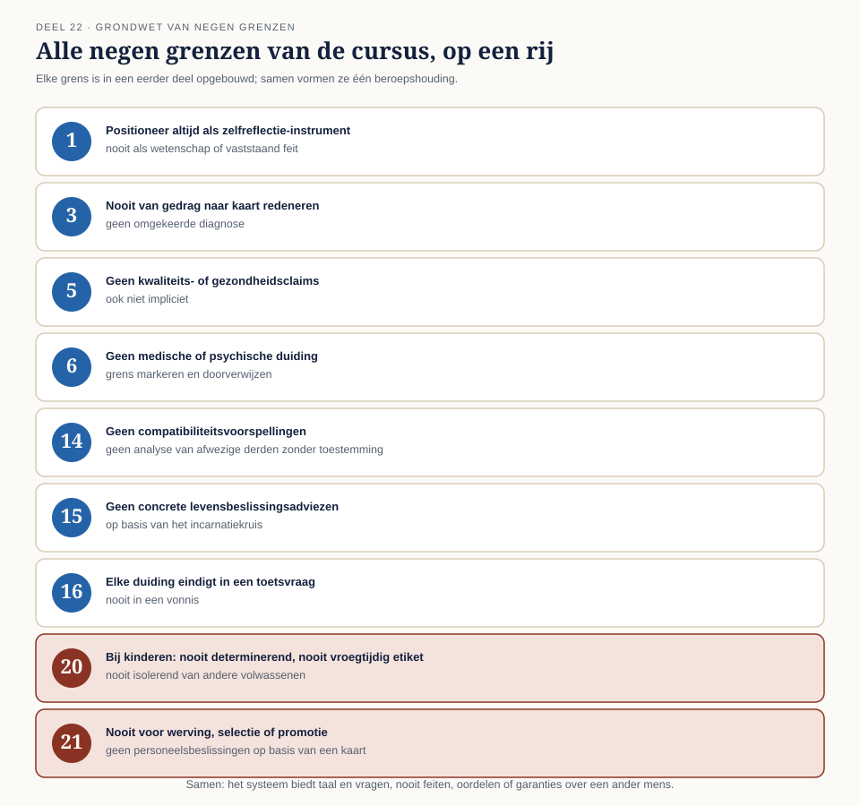

01
Alle grenzen op een rij
⏱ 20 minDoor de hele cursus heen zijn grenzen opgebouwd, deel voor deel, telkens waar ze het meest relevant waren: geen gezondheidsclaims (deel 5), geen omgekeerde diagnose (deel 3), geen compatibiliteitsclaims (deel 14), geen determinerend gebruik bij kinderen (deel 20), nooit voor werving of selectie (deel 21).
| Deel | Grens |
|---|---|
| 1 | Positioneer het systeem altijd als zelfreflectie-instrument, nooit als wetenschap of vaststaand feit |
| 3 | Nooit van gedrag naar kaart redeneren (omgekeerde diagnose) |
| 5 | Geen kwaliteits- of gezondheidsclaims, ook niet impliciet |
| 6 | Geen medische of psychische duiding; grens markeren en doorverwijzen |
| 14 | Geen compatibiliteitsvoorspellingen; geen analyse van afwezige derden zonder toestemming |
| 15 | Geen concrete levensbeslissingsadviezen op basis van het incarnatiekruis |
| 16 | Elke duiding eindigt in een toetsvraag, nooit in een vonnis |
| 20 | Bij kinderen: nooit determinerend, nooit als vroegtijdig etiket, nooit isolerend van andere volwassenen |
| 21 | Nooit gebruiken voor werving, selectie of promotiebeslissingen |

Deze grenzen zijn niet toevallig verspreid ontstaan — samen vormen ze één samenhangende houding: het systeem biedt taal en vragen, nooit feiten, oordelen of garanties over een ander mens.
Controlevraag
Uit Werkboek deel 22, Opdracht 22.1
1Uit welk deel komt de grens "geen medische of psychische duiding; grens markeren en doorverwijzen"?Toon antwoord
Deel 6.
2Uit welk deel komt de grens "elke duiding eindigt in een toetsvraag, nooit in een vonnis"?Toon antwoord
Deel 16.